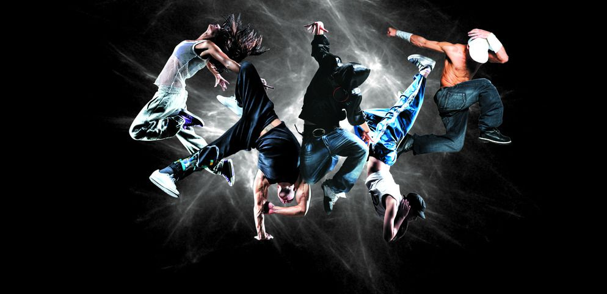

起源简介
街舞是起源于美国，基于不同的街头文化或音乐风格而产生的多个不同种类的舞蹈的统称，最早的街舞舞种为Locking，起源于20世纪六十年代。（注：街舞的英文翻译有且仅有Street Dance这一种，Hiphop只是其中的一种） ，动作是由各种走、跑、跳组合而成，并通过头、颈、肩、上肢、躯干等关节的屈伸、转动、绕环、摆振、波浪形扭动等连贯组合而成的，各个动作都有其特定的健身效果，既注意了上肢与下肢、腹部与背部、头部与躯干动作的协调，又注意了组成各环节各部分独立运动。80年代传入中国，并逐渐作为健身活动传播开来。
实事风采
- 决战•武安 英雌出少年 2017-6-30
- CRAZY PARTY 全国街舞赛事和国际大师课 2017-6-9
- FIGHT FOR DANCE 国际街舞挑战赛VOL.2 2017-5-24
- Green Panda嘉年华 街舞赛事 2017-5-20
- BEST IN YW浙江省少儿街舞挑战赛 2017-4-25
舞曲及视频
- 决战•武安 英雌出少年 2017-6-30
- CRAZY PARTY 全国街舞赛事和国际大师课 2017-6-9
- FIGHT FOR DANCE 国际街舞挑战赛VOL.2 2017-5-24
- Green Panda嘉年华 街舞赛事 2017-5-20
- BEST IN YW浙江省少儿街舞挑战赛 2017-4-25